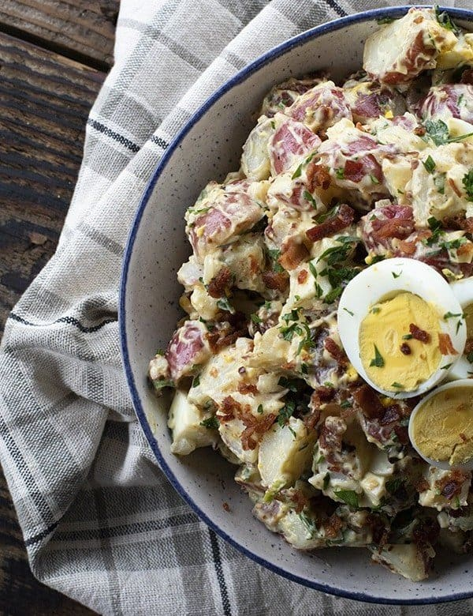

Potato Salad with Bacon

Description
This potato salad is amazing served just warmer than room temperature, allowed to sit
in the fridge for 30 minutes before eating. An amazing BBQ side or work-lunch,
this dish is protein-packed and savory.
The red potato skin keeps its snap after boiling which allows the small creamer
potatos to retain their shape and adds colour and interest to the dish as well.
Ingredients
- 3 pounds red creamer potatoes cut into bite sized pieces, about 1-inch
- 1 gallon water
- 1/4 cup salt
- 2 tablespoons cider vinegar or rice vinegar
- 1/2 sweet onion, peeled and diced
- 3/4 cup mayonnaise
- 1/4 cup Dijon mustard
- 1 pound bacon cooked til crispy and crumbled or chopped.
- Reserve 2 tablespoons of bacon for garnish.
- 6 green onions green parts only, thinly sliced. Reserve 1 teaspoon for garnish.
- 1/4 cup fresh parsley chopped. Reserve 1 teaspoon for garnish.
- 4 hard boiled eggs peeled, and sliced. Reserve 3 slices for garnish.
- 1/2 teaspoon ground black pepper
- 1/2 teaspoon kosher salt
Steps
- Bring 4 quarts of water to a boil in a large pot high heat. Add 1/4 cup of salt to the water and stir to dissolve. Carefully add the potatoes to the water and return to a boil.
- Boil the potatoes for between 8 and 15 minutes, depending on what size you cut them. Beginning at 8 minutes, use tongs to extract a piece of potato and test for doneness.
Do this until they are tender and easily pierced with a fork, knife, toothpick, or skewer.
- Drain in a colander, then immediately return the potatoes to the pan.
- Add vinegar and diced sweet onion to the pan and toss to distribute. Put a tight fitting lid on the pan and refrigerate to bring the potatoes to body temperature.
- Stir in the mayonnaise, Dijon mustard, green onions, parsley, chopped hard-boiled eggs, and chopped, crispy bacon. Transfer to a serving bowl.
- You can either garnish with the remaining bacon, hard-boiled egg, parsley, and green onion and serve warm, or cover and refrigerate to chill.
- If you refrigerate it first, stir, and add a little extra mayonnaise if needed before garnishing and serving.
Home